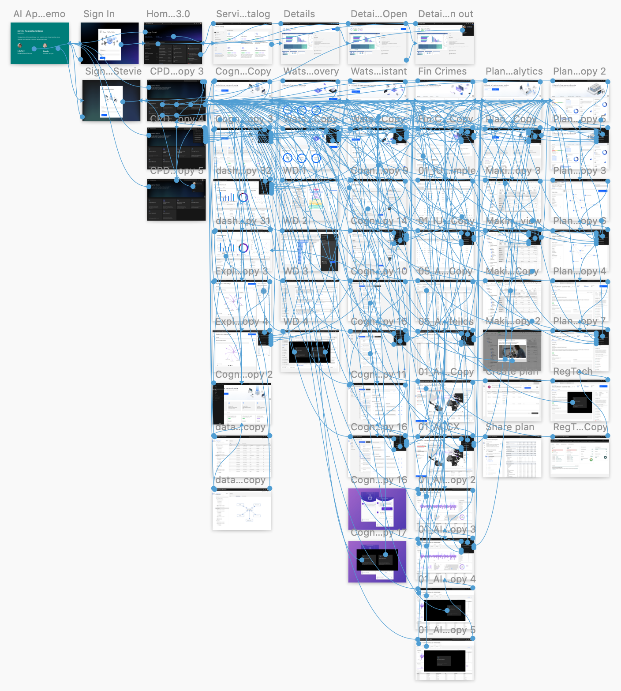

This internship was held in Ottawa from January 2020 to April 2020.
I had the opportunity to intern at IBM Ottawa's design studio where they develop and design Cognos Analytics an AI driven business analytics platform. There I got the opportunity to apply what I have learned in school and self study and contribute to the user experience of key components of the product. This internship acted as a catalyst for my design career as I got a taste of what design is on a large digital product.

As a newly transitioned designer and as someone that believes in wearing many hats, I took advantage of the opportunity being amongst various design teams in the studio and exposed myself to a variety of tasks.
I collaborated with the dashboard team to propose UX enhancements to the creation and consumption of dashboards. Being a first time user of the product was advantageous as I saw the product through the lens of a novice. Overall, I was responsible for the filter portion of the dashboard.
There was a large effort in updating all of the user interfaces of the product to IBM's design system Carbon. This project allowed me to produce 1:1 replications of interfaces following a strict design system efficiently while concurrently thinking about improving the user experience of old designs.

Requirements were gathered with the stakeholders of IBM analytics through virtual sketching sessions. A new community hub that supports Cogno Analytics' customers was designed after rounds of user feedback.

Below is one of the prototypes that I made displaying the flow of the customer onboarding journey and the interactions with other IBM analytics products. This was used to analyze the disconnect between IBM's analytics products and where to prompt users for engagement.
Proposed a predictive AI that scans news articles to assist with relevant dashboards in a team of developers, architects, and designers. I created the interfaces and prototype for the proposed product.
I conducted heuristics tests for areas of the product using Nielson Norman's heuristics.
I collaborated with other interns on using IBM's enterprise design thinking methodology and applying it to spark ideas in internal teams.
More information about Cognos Analytics. Feel free to reach out as I can speak to my work at IBM in more detail as not everything is listed here. :)